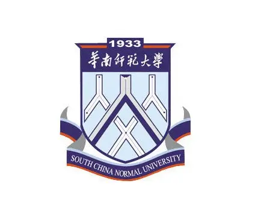

Master’s degree
|
|  | Bachelor’s degree
|
Computer Skills: National Computer Rank Examination-Level 2 (Python), College Computer Test-Level 2 (Access database); good command of MS Office Software, Photoshop, After Effects, Audition, Premiere, ArcGIS, ENVI; programming languages like C++, Python
Languages Proficiency: Mandarin & Cantonese (native); English (advanced-TOEFL91, IELTS 6.5);
Scholarship: 2016-2017 SCNU School-level Third-level Scholarship
Responsible for preliminary literature review, selection of research topic and preparation of the project,
Visited the residential care service centres to study the accessibility of facilities, designed and distributed questionnaires to collect data on the elders’ needs
Collected geospatial information of Guangzhou using OpenStreetMap and marked the location of care service centres in GIS
Applied a self-developed scale based on the data collected, applied Weibull Distribution to find out the accessibility, responsible for data visualization and mapping
Summarised research results and prepared presentation for the project
Recognised as the highest-rated project at the provincial level in mid-term review
Engaged in collection and processing of remote sensing data, including Landsat and Sentinel II
Responsible for interpreting the remote sensing images using Envi, analysing pixel information, making geometric correction, atmospheric correction etc.
Input data to ArcGIS for calculation, visualisation and mapping
Participated in paper composition and summarised literature
Won the Third Prize of the competition, submitted the paper to academic journal
Engaged in collection and processing of bus data, including making a web crawler and processing data.
Responsible for Python coding. Leveraged Python library, Arcpy, to build up an executable model script.
Input data to ArcGIS for calculation, visualisation, and mapping
Participated in paper composition and summarised literature
Engaged in the workshop presentation.
Conducted voluntary teaching trip to Matang Primary School in Pengzhai Town, Heyuan City
Visited local left-behind children, supported education in the countryside through summer courses
Completed ad hoc tasks using Python-based crawlers, data cleansing tools, batch modification of field names, etc.
Applied GIS to map data in various projects, such as the types of land use in Dongguan City
Perform data analysis on remote sensing images using GIS
Geographic data processing and Python-based data handling
Generating Phylogenetic Tree for type A influenza (H1N1/H3N2), type B influenza (Yamagata/Vitoria), Dengue, etc.
Virus sequence processing and Geophylogenetic Analysis
Promoted to Leader of the Culture and Entertainment Department a year after joining the student union
Responsible for organising all cultural and sports activities in the school
Participated in singing activities in the university on behalf of the School of Geography
Led the research on The Site Selection of Rural Infrastructure Based on AHP-GIS Model: Taking Matang Village as an Example
Responsible for identifying research topic, team organization and division of work, remote sensing image collection, data processing, research report writing and results presentation
2017-2018 Outstanding Student Cadre of School of Geography, SCNU
Third prize of Chengyuan Model Design Competition for Urban Planning and Decision-making
Excellence Prize of the 3rd "Zhonghaida" Measurement Skills Competition, School of Geography, SCNU
Second Prize of the 4th "Zhonghaida" Measurement Skills Competition, School of Geography, SCNU
Third Prize of GIS Professional Skills in the 7th Geographical Science Competition, School of Geography, SCNU
First Prize of Resource and Environment Professional Skills, and Second Prize of GIS Professional Skills in the 9th Geographical Science Competition, School of Geography, SCNU
The second prize of 2018 Summer Social Practice Survey Competition, School of Geography, SCNU